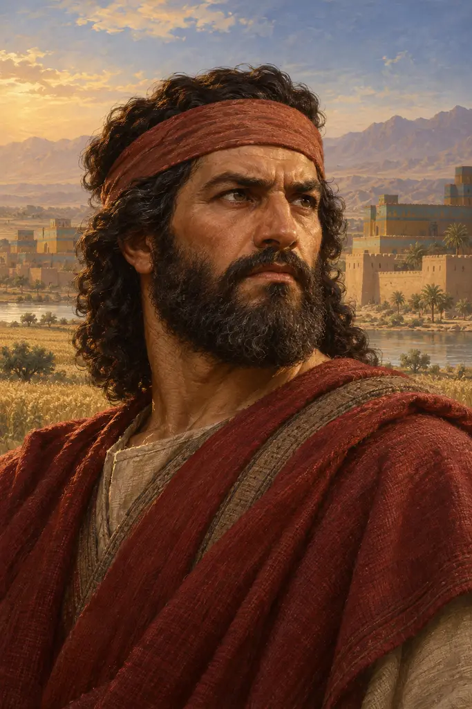
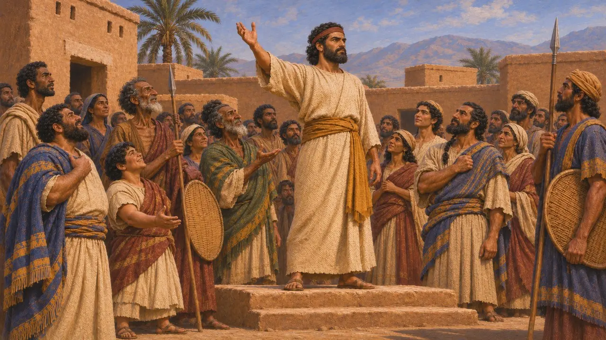
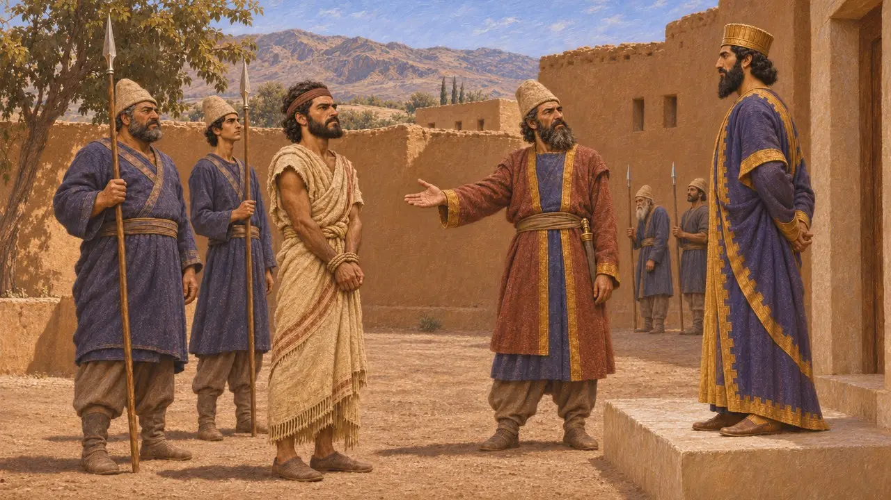
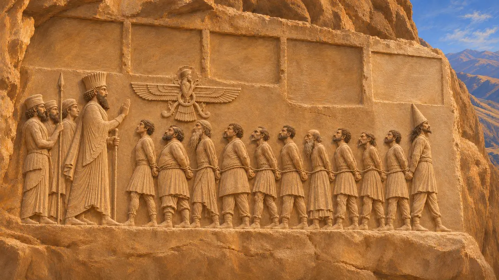
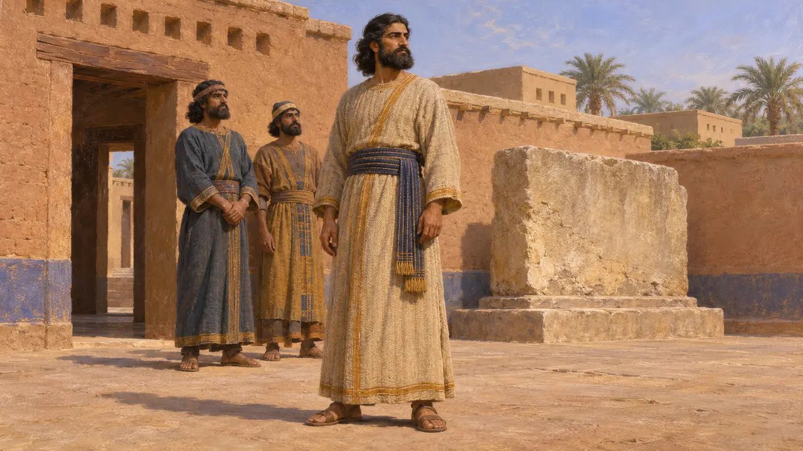

Athamaita
Capo ribelle elamita contro Dario I, Elam, 520-519 a.C. circa
Nel gioco: Livello 5: La Carta
Athamaita guidò la terza sollevazione dell'Elam contro Dario I, nel secondo e terzo anno di regno del re. Il generale di Dario, Gobria, sconfisse i ribelli, catturò Athamaita e lo condusse dal re, che lo fece uccidere. È noto soltanto dalla colonna V dell'iscrizione di Behistun, un'aggiunta tarda che mostra come Dario continuasse a registrare le sue vittorie dopo le grandi rivolte del 522-521 a.C.
Nel gioco: La nota della cronaca del gioco concorda con l'iscrizione: Athamaita guidò la terza rivolta dell'Elam e Gobria lo sconfisse e lo catturò, come registra la colonna V di Behistun. La data del 520-519 a.C. circa è la consueta stima moderna.

La terza rivolta dell'Elam
Nelle fontiLa colonna V dell'iscrizione di Behistun narra che nel secondo e terzo anno di Dario l'Elam insorse di nuovo e pose a suo capo un uomo chiamato Athamaita. L'Elam si era già ribellato due volte. La prima rivolta, guidata da Açina, fu domata rapidamente. Nella seconda, guidata da Martiya, gli Elamiti uccisero il loro stesso capo all'avvicinarsi di Dario. Questa terza rivolta avvenne dopo la fine delle principali guerre di successione, segno che il controllo persiano sull'Elam restava fragile.
DB §71; compare DB §16-17 and §22-23

Sconfitta per mano di Gobria
Nelle fontiDario afferma di aver inviato un esercito al comando di Gobria, un Persiano, uno dei sei uomini che lo avevano aiutato a prendere il trono. Gobria combatté gli Elamiti, li sconfisse e fece prigioniero Athamaita. Lo condusse da Dario, che lo mise a morte, e il re dice che l'Elam tornò allora a essere suo. Il testo aggiunge che gli Elamiti erano stati infedeli e non veneravano Ahuramazda, un'accusa che Dario muove in questa colonna ma non nei precedenti racconti di rivolta, dove incolpa la Menzogna.
DB §71-73; compare DB §68

Un'aggiunta tarda alla rupe
Nelle fontiLa colonna V fu incisa dopo le prime quattro ed esiste soltanto in antico persiano, senza le versioni elamita e babilonese che accompagnano il testo principale. Registra la campagna in Elam e una campagna contro i Saka. Il capo saka prigioniero Skunkha fu aggiunto in fondo alla fila dei ribelli in catene nel rilievo, ma lì non compare alcuna figura di Athamaita.
R. Schmitt, The Bisitun Inscriptions of Darius the Great: Old Persian Text, 1991

Chi era
ContesoNessuno scrittore greco menziona Athamaita, quindi tutto si basa sul breve resoconto di Dario. Alcuni studiosi lo collegano ad Atta-hamiti-Inshushinak, un re elamita noto da un'iscrizione rinvenuta a Susa, il che lo renderebbe membro di una dinastia reale locale. Altri datano quel re a un'epoca anteriore, nel periodo neoelamita prima di Dario, e considerano la somiglianza dei nomi una coincidenza. La questione resta aperta.
W. Henkelman, The Other Gods Who Are, 2008; P. Briant, From Cyrus to Alexander, 2002
Fonti
- Behistun inscription, DB §71-73
- R. Schmitt, The Bisitun Inscriptions of Darius the Great: Old Persian Text, 1991
- R. G. Kent, Old Persian: Grammar, Texts, Lexicon, 1953
- P. Briant, From Cyrus to Alexander, 2002
- A. Kuhrt, The Persian Empire: A Corpus of Sources from the Achaemenid Period, 2007
- W. Henkelman, The Other Gods Who Are, 2008